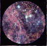

 |
[ Organisation] | [ FAQ's] | ||
| [ Projet 1995-1996] | ||||
| [ Commenditaires] | [ Autres sites d'intérêts] | |||
| [ Projets Antérieurs] |
Département de génie mécanique
Pavillon Adrien-Pouliot, casier #48
Université Laval
Sainte-Foy (Québec)
Canada G1K 7P4
Fax : (418) 656-7415 a/s M.Alain DeChamplain